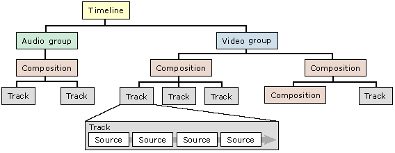
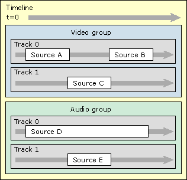

[The feature associated with this page, DirectShow, is a legacy feature. It has been superseded by MediaPlayer, IMFMediaEngine, and Audio/Video Capture in Media Foundation. Those features have been optimized for Windows 10 and Windows 11. Microsoft strongly recommends that new code use MediaPlayer, IMFMediaEngine and Audio/Video Capture in Media Foundation instead of DirectShow, when possible. Microsoft suggests that existing code that uses the legacy APIs be rewritten to use the new APIs if possible.]
[This API is not supported and may be altered or unavailable in the future.]
A timeline is an object that DirectShow Editing Services (DES) uses to represent a video editing project. An editing project starts as a collection of source clips, taken from video files, sound files, or still image files. A linear sequence of clips forms a track. In DirectShow Editing Services (DES), audio and video are placed in separate tracks.
Tracks can also be layered. Multiple audio tracks are mixed together, and might include audio effects, such as fades or reverb. Multiple video tracks are used to create transitions. For example, you can create a wipe from one clip to another. Another example is a chroma key, in which the background of one clip is keyed out and replaced by a different track. (The weather forecaster in front of a satelite image is an example of chroma keying.)
DES uses a tree structure to represent an editing:
A timeline must contain at least one group. Each group represents a single stream in the final production. A typical project includes one video group and one audio group. Compositions are optional; they exist to provide more structure if needed.
The following illustration shows the child-parent relations that make up a timeline:

The following shows a timeline as a temporal sequence:

The arrow at the top represents the direction of the timeline, starting from time zero. Within the video group, track 1 has a higher priority than track 0. The source objects in track 1 obscure those in track 0. Where track 1 is empty, track 0 "shows through." As mentioned earlier, audio tracks are simply mixed together.
Getting Started with DirectShow Editing Services
Â
Â